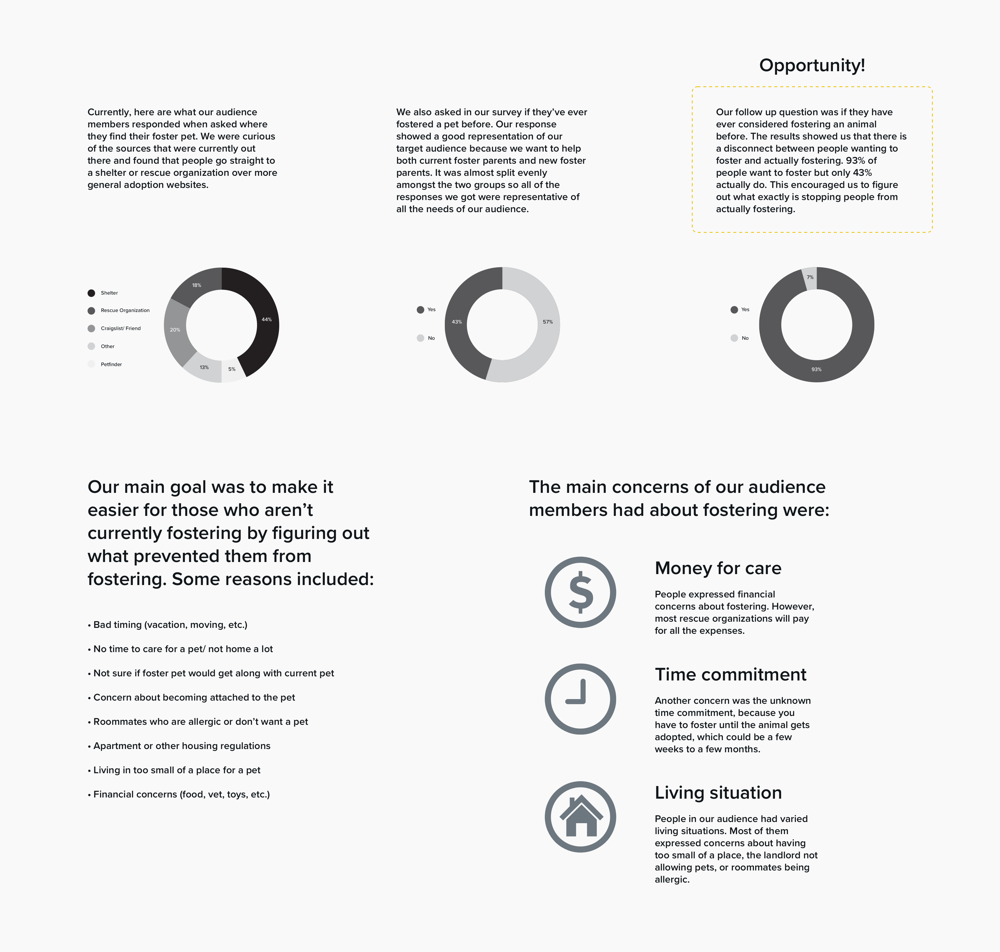
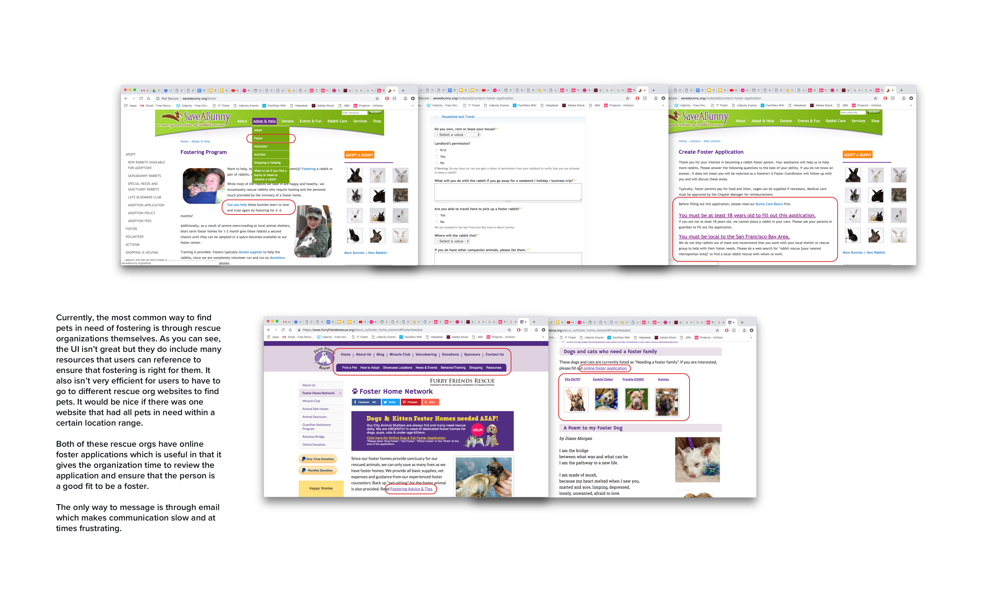
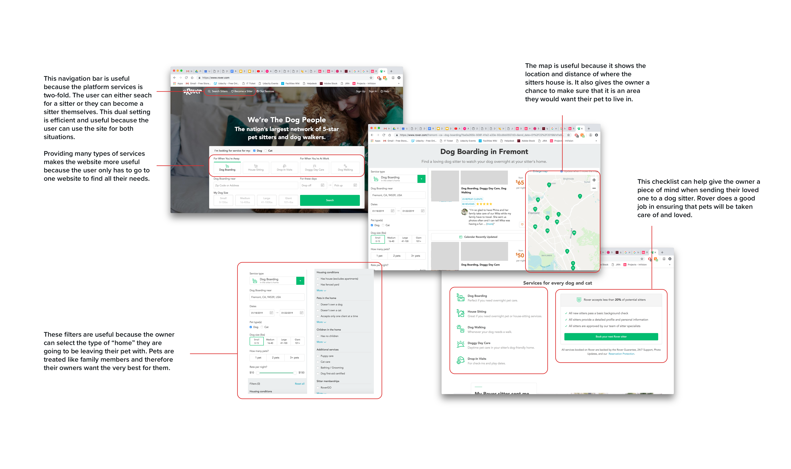
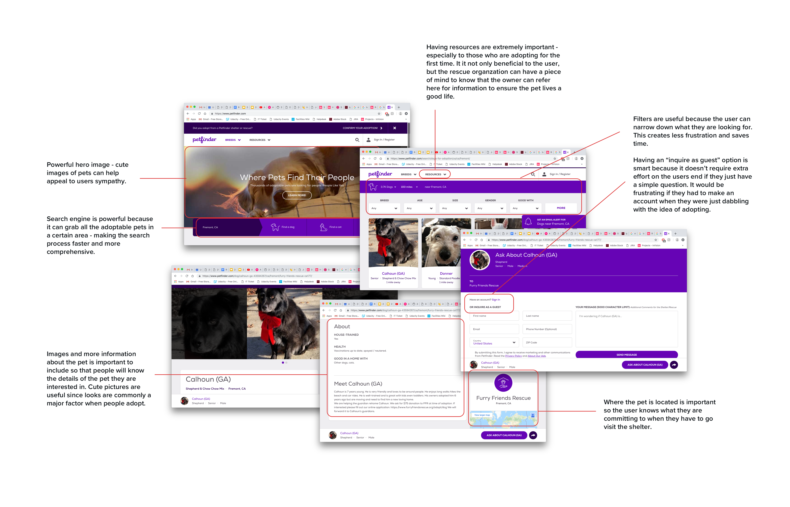
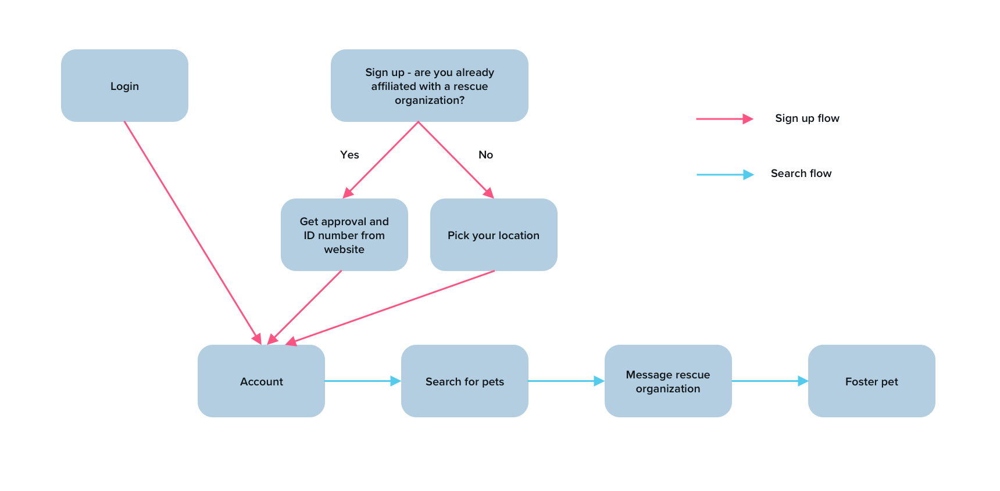
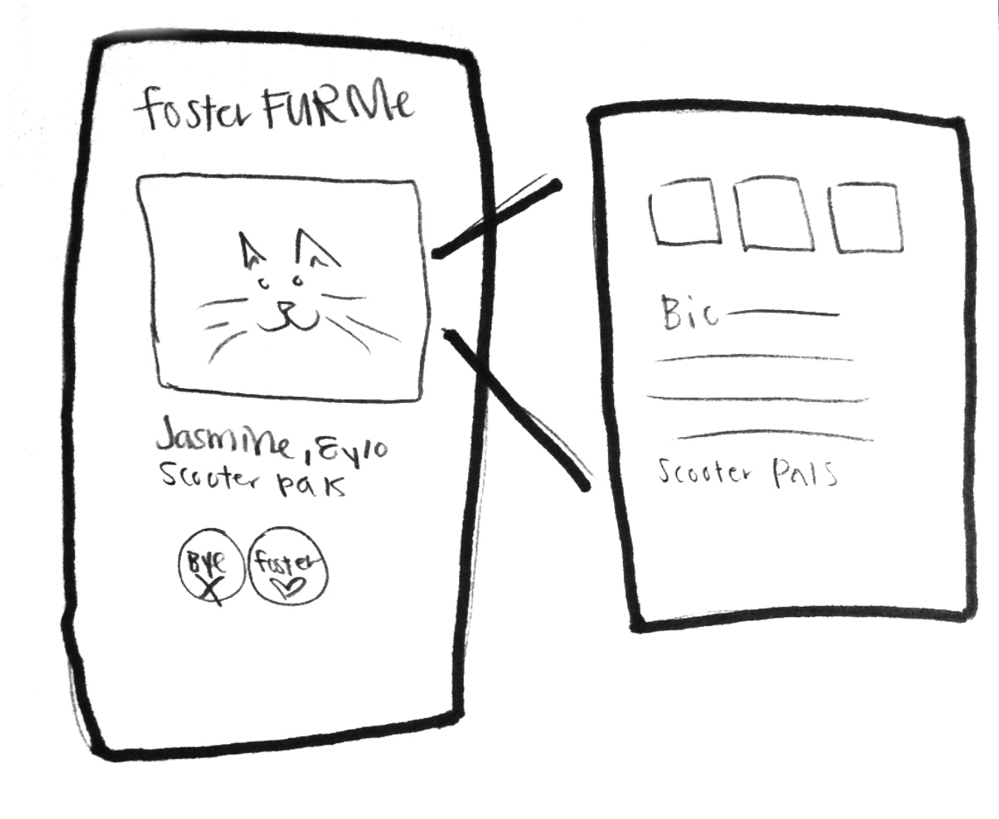
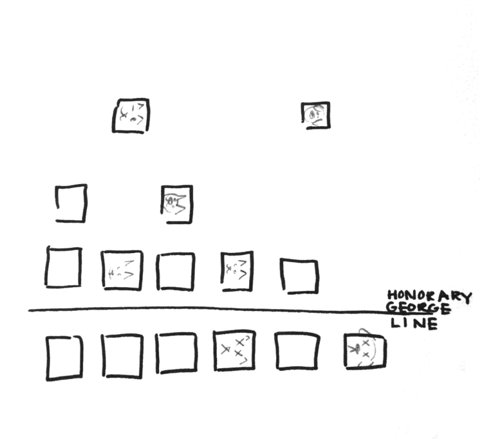
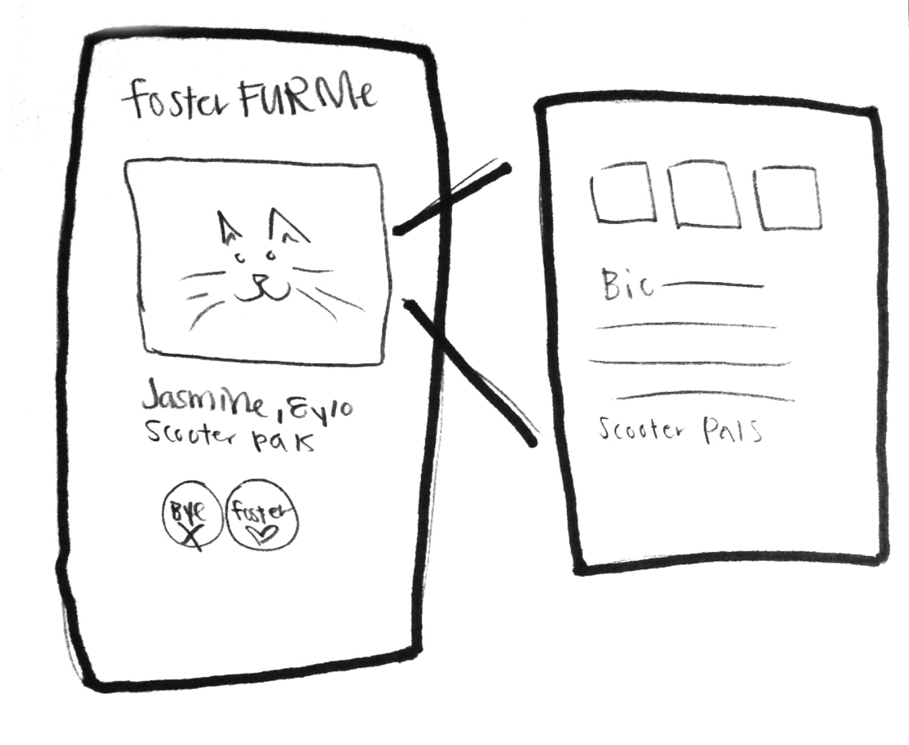
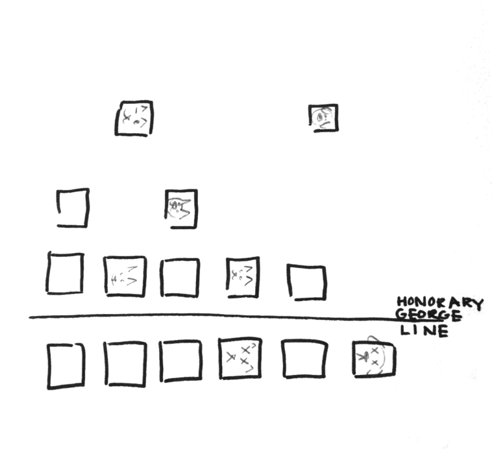
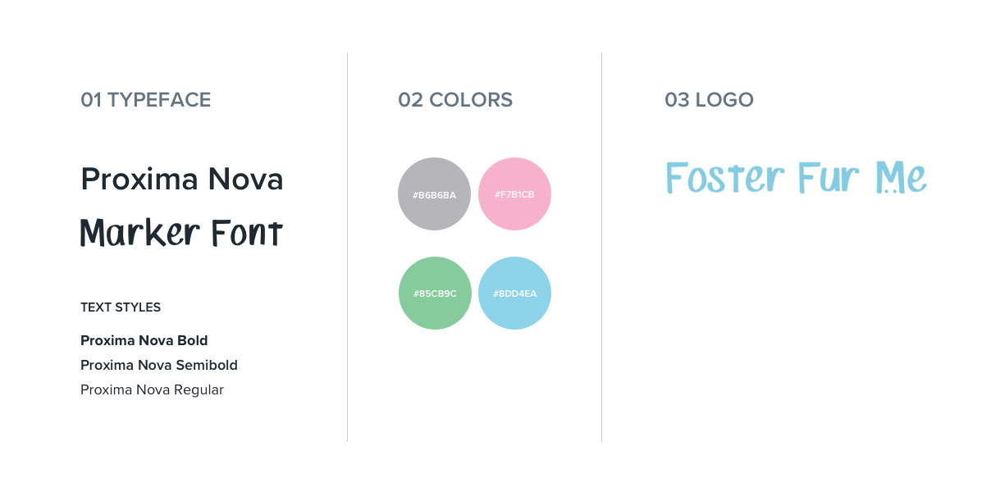

Product Design
Foster Fur Me
My group and I chose to make a website in order to streamline the process when fostering a pet. There is no website or resource that does this right now which we found to be a huge problem because the life of a pet would be at stake.
View Process Book

My Role
- Product Designer
Timeline
- Apr. 2017 - Jun. 2017
Tools
- InDesign, Illustrator, Photoshop, Wix
Skills
- User Research, Prototyping, Wireframing
Introduction
Background
Fostering is when someone takes care of and provides a home for a pet until they are adopted. Common reasons for fostering are: shelters don't have enough space, the pet is too young, the pet needs socialization, or the pet is recovering from an injury. This is important because those pets who are unable to find a home, may be euthanized if there is no space at the shelter. By fostering, one can save a life.
Problem
People that want to find a foster home for a pet don’t have the correct resources to do so. Fostering a pet is a great alternative if someone is unsure of whether they will have the long-term time commitment to adopt a pet but still want to help. There is an existing site (Petfinder) which helps people find adoptable pets in their area. However, there is no place to go to find pets who need fosters — these pets could be ones who are old, sick, less visually pleasing, or will take a long time to get adopted for other various reasons.
How can we make a search engine that encourages people to foster pets and at the same time streamlines the process?
Pain Points
The current system is slow and inefficient because communication is through email. In addition, not everyone can do it because you have to be affiliated with a rescue organization in order to foster a pet. The main way to find a pet in need of a foster is through the rescue organization or shelter themselves. There is no search engine that can find animals from multiple shelters or organizations.
Research
Interview
Much of the primary research was information supplied by my teammate, Alina, from past experiences being a foster parent. Animals who are not deemed “quickly adoptable” are given only a short period of time at the shelter before they are euthanized. To help give animals a longer amount of time to be adopted, people can foster the animals.
“Because of the flawed system, I received an email two hours before my cat’s euthanasia time and had to run to the shelter to save her. If there was a better, more efficient system, I could have gotten to her sooner.”
-Alina, concerned foster parent
Rescue organizations are "no kill", and they receive animals to foster by either pulling the animal from a shelter, or receiving them directly from a surrendering owner. Alina has experienced firsthand how difficult it is to find a pet in need in a timely manner, given the fact that the current “advertising” for pets in need of foster are emails sent to each organization individually.
Survey
As part of our research process, we sent out a survey to the Davis Pet and Supplies Facebook group. We had a great turn out with 49 responses. Of those responses, we were able to extract the most pressing needs from our audience to include in our website.
Proposed Solution
My team and I wanted to create a website similar to (or even an extension of) Petfinder which would allow people to search for pets who need fosters. This would work from two ends — the shelters would post their pets who need fosters, and then the foster pet parents/rescues can search for animals to pull from the shelter for foster. This system would help people know exactly what to do if they are looking for an animal to foster, or have an animal that needs a foster.
Competitive Analysis
The competitive analysis of this project was difficult because a foster search engine platform doesn't exist. The most common methods of finding pets in need of foster were either directly through the rescue organization website itself or through word of mouth.
We decided to analyze two rescue organization websites, Rover, and Petfinder.
Rover is a pet sitter and dog walker website where users can find someone to take care of their pet while they are gone. The platform is almost like an abridged version of fostering — the duration is much shorter but similar in that Rover will be providing a temporary housing situation for the pet.
Petfinder is probably the closest platform that exists currently that provides the services that we would like our website to provide. It is a search engine for pets up for adoption. We want to create a similar site where foster coordinators can post pets in need of foster and at the same time, people who are interested in fostering can look up pets. The site would also provide fostering resources which are slightly different than adopting resources.
Ideation
User Flows
Wireframes
My team and I made brief wireframes for our three different ideas. Our first idea was to make a traditional filtering system where the user could choose the type of animal they wanted to foster, gender, breed, size, etc. and only those pets with the selected traits would appear. Our second idea was to make a "Tinder" for pets type of interface. It would be a mobile app, where pets would show up one by one and the user could swipe left or right depending on whether they would consider fostering it or not. Our last idea was to make an interface that portrayed the "urgency" of which animals needed to be fostered. The idea was that the pets who had euthanasia dates soonest would show up at the top so that users would know that those were the ones that they could save right away. There would then be a memorial of the pets who weren't saved in time.
 



Iterations
Prototype Ideas
We created three digital prototypes to test on users to see which idea out of the three they liked best and felt created a sense of urgency.

Peer feedback from the mock-ups above determined that the urgency line concept was the most impactful, however it needed to be more eye-catching. There was also feedback that the images of the passed animals were too depressing, and needed to be downplayed but still there since it displayed a really strong message.
"The urgency line concept really drives people to act fast."
- Design 159 Students
Final Design
Brief Style Guide
We wanted the logo and color scheme to be fun, warm, and playful to make fostering seem less sad and daunting.
Final Prototype
Instead of having the memorial above the fold, we decided to put it at the bottom of the page. Therefore, it was still there but not the first thing people saw when viewing the website.
We also included many resources that users could refer to if they had any questions. For example, we included videos about "the art of letting go". From our initial research, we found out that many people didn't want to foster because they were worried about becoming attached and therefore being unable to give up the pet when the time came.
We wanted to make sure that this website was a comprehensive guide for anyone looking to foster. We believe that this project was important because it could impact the lives of so many pets.
Takeaways
Creating this project made me realize how little I knew about the fostering process. It actually had quite an impact on me because I realized that you could literally be saving lives by doing this. By conducting interviews, I realized that many people had the same gap in knowledge that I had but at the same time were wanting to help.
The iterative approach to the process really helped me gain a better understanding of what the users needs are. Resources and more information seemed to be just as important as the search engine itself. In addition, the numerous rounds of user testing really helped guide the direction of the project which in turn helped us create an impactful message to users.
Next Steps
We would like to conduct more user testing on potential foster parents and foster coordinators and update the website with their feedback. We would also like to add in a section on how to register and create training modules for fostering pets with special needs and bottle babies. In addition, we think creating a mobile app would drive more users and we would like to team up with current platforms such as Petfinder and Rover to see if we can integrate our services with each other.